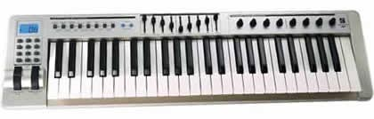
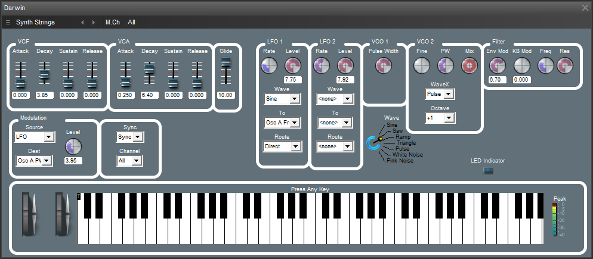
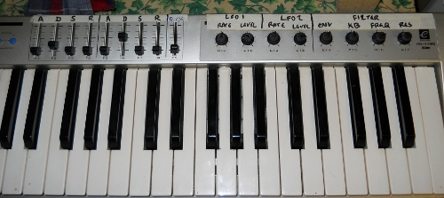

{kind=link}
{kind=link}
Darwin Synth
tl;dr : "Darwin" is a .dll plugin synth for any standard MS Windows-based VST host. Download.
It was built using SynthEdit, a toolkit for building software synths, especially simulations of traditional analog synths. Alas SynthEdit's MS Windows payware, but if you're into this kind of stuff it's great value for the price ($69.50), and for historical reasons my DAW machine is running MS Windows. I came across it around 2007 thanks to Rick Jelliffe who has written up some of his creations with it.
While it's perfect kit for making original, novel instruments (as Rick has demonstrated), to get the hang of using it I put together a very traditional (1980s?) styled synth. This also happened to be something I was lacking - there are plenty of suchlike synths available out there, but I've never found one I felt really comfortable with. Homemade was the obvious answer.
My main MIDI keyboard is an Evolution MK-449C (I suspect these may have gone out of production), an inexpensive fairly generic keyboard. It looks like this:

Along with the setup controls, it also has 9 sliders (top middle) and 8 rotary controllers (top right).
I hate twiddling controls with a mouse, but love twiddling knobs. So I thought I'd try and customise a synth to this controller.
Here's the result :

- and here's how I've got the controls mapped from the keyboard:

(I somehow managed to count 12 knobs, hence a few controls on the synth aren't mapped)
It's a long time since I put this together, at the time I posted this image on Flickr - MIDI (pushbutton) to Octave - can't remember , but it appears to be a fresh bit of functionality.
Here are the relevant downloads:
- Darwin4.dll
- SynthEdit design file
- Skins
- Darwin's schematic in SynthEdit, as you can imagine it takes a long time to put these things together :)
Incidentally, if you're looking for an inexpensive (but powerful) DAW for MS Windows, I recommend EnergyXT.
(c) Danny Ayers
This work is
licensed for reuse
Creative
Commons